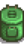
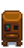
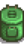
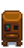
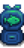
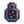
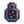
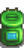
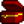
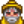

| Level 1
|
Level 2
|
Level 3
|
Level 4
|
Level 5
|
| Casting distance increased by one tile
|
 Bait Bait
|
 Crab Pot Crab Pot Dish O' The Sea Dish O' The Sea
|
 Deluxe Bait Worm Bin Recycling Machine Deluxe Bait Worm Bin Recycling Machine- Casting distance increased by one tile
|
 Fisher Fisher
- Fish worth 25% more.
|
Trapper
- Resources required to craft crab pots reduced.
|
|
|
| Level 6
|
Level 7
|
Level 8
|
Level 9
|
Level 10
|
 Bait Maker Spinner Spinner Trap Bobber Sonar Bobber Trap Bobber Sonar Bobber
|
 Cork Bobber Cork Bobber Treasure Hunter Treasure Hunter
|
 Deluxe Worm Bin Barbed Hook Barbed Hook Dressed Spinner Dressed Spinner
|
 Seafoam Pudding Seafoam Pudding Magnet Magnet
|
 Angler Angler
- Fish worth 50% more.
|
Mariner
- Crab pots no longer produce junk items.
|
 Pirate
- Chance to find treasure doubled.
|
 Luremaster
- Crab pots no longer require bait.
|